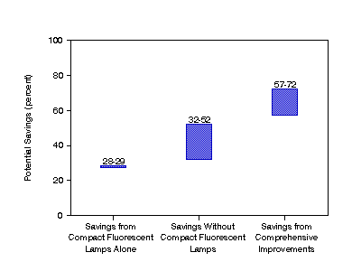

Publication and Tables
Figure ES1. Ranges of Potential Savings, Maintaining Current Lighting Levels

Note: Each shaded band indicates the range
of savings
estimates obtained, under varying assumptions for the effectiveness of the conservation features
considered for each case. The potential savings are shown for each case as a percent of the base
case lighting energy estimate (321 billion kilowatthours). Additional savings are possible if
lighting levels are reduced.
Sources: Adapted from Energy Information Administration,
Office of Energy Markets and End Use, Form EIA-871A, "Building Questionnaire" of the 1986
Nonresidential Buildings Energy Consumption Survey; and sources described in Appendices B
and C.

To View and/or Print Reports (requires Adobe Acrobat Reader) -
Download Adobe Acrobat
Reader
If you experience any difficulties, visit our Technical Frequently Asked Questions.
You have the option of downloading the entire report or selected sections of the report.
Full Report - Lighting in Commercial
Buildings (file size .42 MB) pages: 107
Selected Sections - (requires Adobe Acrobat Reader)
- Contacts, Preface, Contents, Executive Summary, Introduction (file size 43,310 bytes) pages: 13.
- Technical Approach (file size 29,712 bytes)pages: 6.
- Commercial Lighting Energy Profile (file size 1.20 MB) pages: 18.
- Lighting Energy Conservation Potential (file size 91,885 bytes) pages: 6.
- Future and Related Analyses (file size 7,993 bytes) pages: 2.
- Detailed Tables (file size 62,919 bytes) pages: 14.
- Appendix A. Methodology for Computing Aggregates and Averages (file size 10,862 bytes) pages: 2.
- Appendix B. Illuminance Assignments for CBECS Building Activity Categories (file size 23,081 bytes) pages: 6.
- Appendix C. Equipment Technical Characteristics (file size 21,701 bytes) pages: 4.
- Appendix D. Motivation and Computation of Lighting Measures (file size 44,031 bytes) pages: 8.
- Appendix E. Savings Estimation Methodology(file size 16,268 bytes) pages: 4.
- Appendix F. Relative Standard Errors for the Lighting Profile Tables (file size 63,516 bytes) pages: 14.
- References (file size 9,553 bytes) pages: 2.
- Notation (file size 6,847 bytes) pages: 2.
- Glossary (file size 18,740 bytes) pages: 4.


File Last Modified: April 8, 1997
- Contact:
- Joelle Michaels
- joelle.michaels@eia.doe.gov
- CBECS Manager
-
URL: http://www.eia.gov/consumption/commercial/data/archive/cbecs/cbecs2k.html
If you are having any technical problems with this site, please contact the EIA Webmaster at
wmaster@eia.doe.gov
|